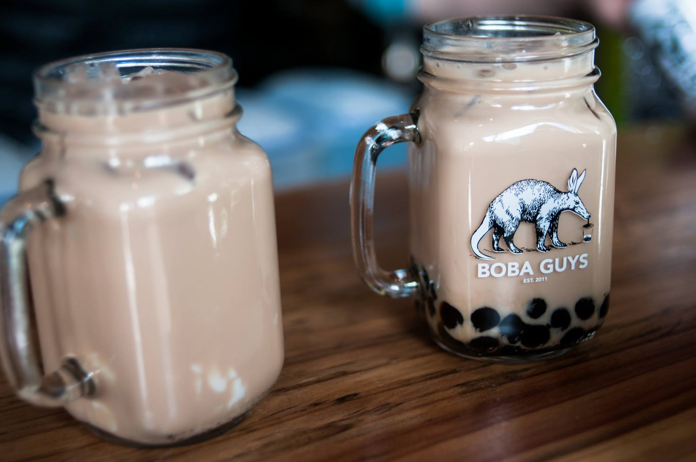

(From Boba Guy's Facebook page)
what is boba/bubble tea?
- both these names are used to refer to a tea-based drink originating from taiwan that traditionally contains black, chewy tapioca pearls, called boba or bubbles, and milk or creamer (why "milk" is sometimes inserted into the name). these components also reflect the original chinese name (珍珠奶茶), or "pearl milk tea." the typical types of tea used are jasmine green, ceylon black, and oolong. nowadays, there are many varieties of the drink, given the option to customize tea, toppings, flavor, etc.
history
- there are two different origin stories:
- in the most accredited one, tu tsong-he, the owner of hanlin teahouse in tainan, got the inspiration for bubble tea in 1986 after seeing white tapioca balls, which give off the illusion of pearls and gave rise to the chinese name. he changed the color to nowadays black soon afterwards.
- liu han-chieh, the founder of chun shui tang teahouse in taichung, saw that the japanese were serving cold coffee and thought to do the same for tea. he added sweetened pudding and teapioca balls into an iced tea drink during a meeting in 1988 and it was so popular that he added it to the menu at the teahouse.
- it started becoming popular in east/se asia in the 1990s and at some point got exported to the us and canada, especially in places that have large asian populations.
places in durham?
- honestly, the selection of boba tea here in durham is pretty dismal. i personally thought the now closed down purple monkey had the best in town, but that's because their only competition was frozy and frozy is not that great. i appreciated that purple monkey used actual taro in their taro milk tea and their black milk tea tastes better than frozy's.
- now, i normally go to quickly in morrisville (yes i drive that far for boba). i know some friends who prefer kung fu tea in cary, but I really dislike their black tea, which has this weird medicinal aftertaste. their other selection is fairly good though, but quickly is closer and offers good taiwanese appetizers.
source: annie yin (me), bubble tea wikipedia